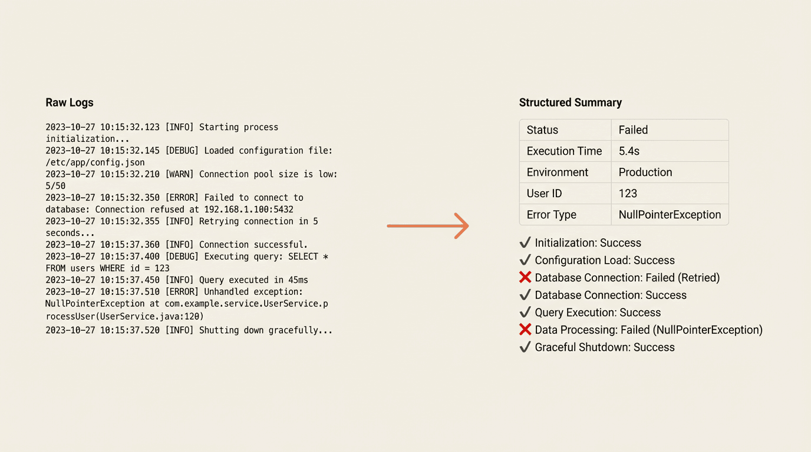

Debugging at Scale
Feb 5, 2026 · 8 min read
Published on ngramModern systems touch multiple services with a single user request, generating logs across different systems. When users report issues, debugging typically requires finding request IDs, opening logging dashboards, filtering through hundreds of entries, manually piecing together what happened, and spotting errors buried in output. This process takes 15 to 30 minutes per issue.
ngram built a debugging skill for AI coding assistants that converts a simple command into structured insights within 30 seconds:
/debug-conversation 8b7d7d8d-81f0-43b2-8d19-358c298cbca4
The output provides request parameters, execution timelines with durations and status, step-by-step component breakdowns, and identification of what worked versus what failed, without requiring manual log hunting.
The skill uses Vercel's log API to pull entries matching request identifiers with configurable time ranges. This approach works with any API-enabled log provider like Datadog, CloudWatch, or Papertrail.
Raw logs contain JSON messages with timestamps, operation names, parameters, and results. The skill extracts request metadata, builds chronological execution timelines, calculates operation durations, identifies errors and warnings, and parses structured output data.
Output format adapts to log contents. Rather than displaying "processData: 75000ms," it provides context: "Data processing took 75 seconds and handled 3 input sources."
The debugging capability exists in a single markdown file: .claude/commands/debug-conversation.md. This file defines input arguments, setup instructions, step-by-step workflows, output formats, and error handling procedures.
Every engineering team has workflows involving context retrieval, domain knowledge application, and structured output generation. These processes typically live in people's heads. Encoding them as AI skills provides consistency, speed, onboarding advantages, and continuous evolution.
Complex backend systems can benefit from similar skills. Key ingredients include structured logging with JSON, queryable log storage with API access, and markdown-based skill files instructing AI assistants on fetch, parse, and presentation steps.
ngram's agentic chat lets users interact with an AI assistant orchestrating web research, storyboard generation, image creation, and voice synthesis. Previously, debugging broken sessions meant manually searching logs by conversation ID and scrolling through hundreds of entries.
Now:
/debug-conversation 8b7d7d8d-81f0-43b2-8d19-358c298cbca4
The skill fetches logs, auto-detects time ranges, and parses tool invocations, revealing within seconds that image generation timed out after 45 seconds, cascading to block downstream processes.
The skill also supports input mode variations depending on log location:
/debug-conversation <id> --since 7d
/debug-conversation --file logs/session-dump.json
ngram continues building skills making engineering teams faster by encoding expertise into shareable files that improve continuously. For teams running complex production systems, this approach helps document workflows while providing immediate debugging support.